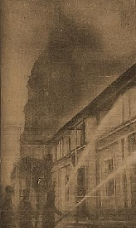

|
j
a v a s c r i p t |
Pg. 1/3
September 23, 1944

Binondo Church Burns
Tribune (two pages today courtesy of the bombing): "P.I. under Martial Law.... President assumes all powers of Government effective today." "50 Foe planes downed on first day of raid" — including 13 "probables." The raiders bombed "the vicinity of the Binondo Church" and the "Japanese Embassy." A "part of the residential section of the city was strafed." Fire spread from 676 Ongpin to the cigar factory then to the Binondo Church and the Orient Building, which houses the Philippine Constabulary headquarters. "Two foe carriers set ablaze" — all Japanese planes "returned safely to their base" — at least what was left of it. The Japanese now admit the loss of four planes over Manila. At 1045 Laurel declared the Philippines to be in a STATE OF WAR with America AND Britain. I heard the PIAM announcement on the speakers of the Heacock Building. About 100 Filipinos were standing directly across the street, in front of the Bank of Commerce. I took a close look at their faces: silent, glum, serious, perturbed; no one smiled or talked. The fellow behind the counter of the candy store in a corner of the building said, "Now watch prices go up again." I asked him how the poor were living. He just shrugged his shoulders, heaved a colossal sigh, and said: "Well, this can't last much longer." That is the refrain now sung by thousands — nay millions. Yes, it can't last much longer but the climax has yet to begin. And in the two months or so that it'll take for an invasion to come, things can only get worse. Thousands were hunting for food today. There was none. Tiny loaves of rice bread, which I bought yesterday for P5, were now at P8; and they sold out before I could make up my mind if they were clean enough. Before the war, the worst bread was of better quality and sold for 5¢ each. The Air Raid signal went on at 0830; the Alert an uneventful two hours later. I spent the morning going around collecting eyewitness accounts. |
|
|
|
|